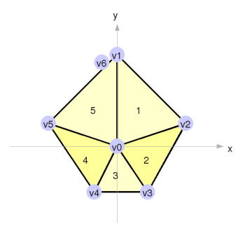
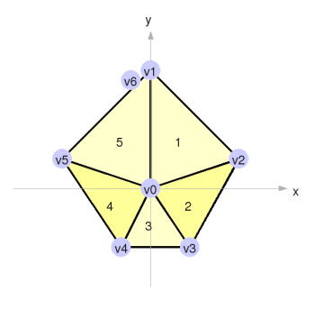
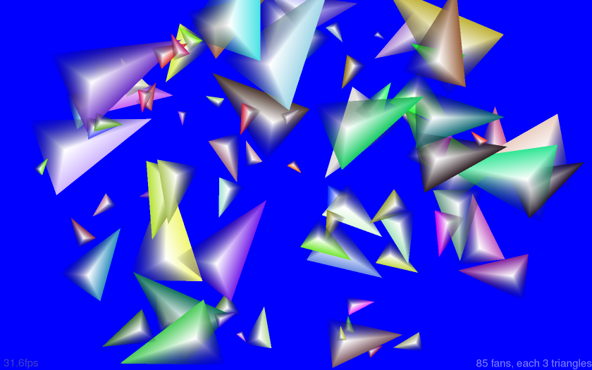
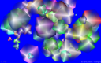

pyglet week 2: Better Vertex Throughput
In last week's 2D Graphics With pyglet and OpenGL, I used the pyglet library to produce some OpenGL triangles on the screen, from my rough-and-ready Python code. This week, I want to try to boost the throughput, to get some idea of how complex a scene we can realistically render from Python, while still maintaining a decent frame rate.
I was a little optimistic in my assessment of how fast last week's code was running. When I come to measure it carefully, I find that displaying just 85 triangles will bring the framerate down to a minimally acceptable 30fps. This is on my lappy - a Thinkpad T60, with a dual 1.6GHz cores, only one of which is busy, and an ATI Radeon Mobility X1400 running at 1680x1050. The framerate seems fairly independent of what size the triangles are, and of whether blend is enabled to make them translucent.
So what can we do to improve this? I suspect that an easy win would be to replace each entity's single triangle with a collection of triangles, specified by an array of vertices. To assemble the vertex list, we create the first vertex at (0, 0), and then lay all the following vertices in a ring around it.
 

I've shown vertex 6 lying adjacent to vertex 1, just to make them both visible, but in actuality they are coincident. Rendering these N vertices using glDrawArray() can produce N-2 triangles in the best case. All these vertices are shunted to the graphics card, translated, rotated, scaled and rendered in hardware, all without our code having to do any extra work, and hopefully without any significant performance penalty.
Starting with the code from last week, I modify it to generate the vertex list using the following new static member on class Entity. Note that I have coined the term shard to describe the individual triangles rendered by class Entity:
class Entity(object): numShards = 5 vertsGl = None @staticmethod def _generateVerts(): verts = [0.0, 0.0] for i in range(0, Entity.numShards+ 1): bearing = i * 2 * pi / Entity.numShards radius = (2 + cos(bearing)) / 2 x, y = Position.CoordsFromPolar(radius, bearing) verts.append(x) verts.append(y) Entity.vertsGl = (GLfloat * len(verts))(*verts) Entity._generateVerts()
The for-loop simply creates the list of vertex co-ordinates, as illustrated above. The cryptic-looking penultimate line converts that list into an array of GLfloats, as provided by ctypes, and stores that array on a class level attribute, Entity.vertsGl. The final line then calls this member function as soon as the class is defined, creating our vertex array at program startup. We also create a similar array of colors, which will be used to color each vertex, but since I want each fan drawn in a different set of colors, this is done in Entity.__init__(), and the resulting arrays are stored on the instance (not shown).
This vertex and color arrays can then be rendered as a triangle fan using the following Entity.draw() method:
def draw(self): glLoadIdentity() glTranslatef(self.pos.x, self.pos.y, 0) glRotatef(self.pos.rot, 0, 0, 1) glScalef(self.size, self.size, 1) glEnableClientState(GL_VERTEX_ARRAY) glEnableClientState(GL_COLOR_ARRAY) glVertexPointer(2, GL_FLOAT, 0, Entity.vertsGl) glColorPointer(4, GL_FLOAT, 0, self.colorsGl) glDrawArrays(GL_TRIANGLE_FAN, 0, len(self.vertsGl) // 2)
With other minor tweaks to give a new background color, running this with 3 shards per Entity produces quite a pleasing effect:

At 30fps, we can still manage 85 entities, and we're now rendering a fan of three shards for each one, so we've tripled our throughput to 225 triangles per frame. I suspect it can get better though. Let's try cranking up the number of shards per fan, while reducing the number of fans to maintain 30fps.
| Shards per entity | Entities at 30fps | Triangles per frame |
|---|---|---|
| 3 | 85 | 225 |
|  7 | 85 | 595 |
 20 20 |
85 | 1,700 |
| 100 | 82 | 8,200 |
 400 400 |
68 | 27,200 |
 1,200 1,200 |
48 | 57,600 |
| 1,800 | 39 | 70,200 |
| 3,000 | 29 | 87,000 |
| 6,000 | 17 | 102,000 |
 12,000 12,000 |
10 | 120,000 |
| 100,000 | 1 | 100,000 |
Above about 200 shards per fan, the shards start getting so thin that they produce moire effects, and above 10,000 there's some crazy white artifact starts happening in the middle of the fans. But nevertheless, the times taken to render these frames show a strong trend.
Fewer fans, each with more shards, results in much higher triangle throughput - up to 120,000 triangles per frame. Although it's exciting to see such high figures, I'd almost rather it wasn't the case. I'd prefer to create a game with more independent entities wandering around, regardless of how little graphical detail they could be adorned with. But there you have it, blame John Carmack. Anyhow, it's clear that we can deliver sufficient graphical grunt to put together some sort of game. Next time I hope to make a start on putting all these triangles to good use.
Update: For a 500% performance boost when running under Linux, invoke Python with the -O flag. I can now get 500 fans on screen, each with 100 triangles, at 30fps. See comments below.
On to Part 3 - Some Pretty Flowers...
 gameloop2.py.zip
gameloop2.py.zip{kind=link}